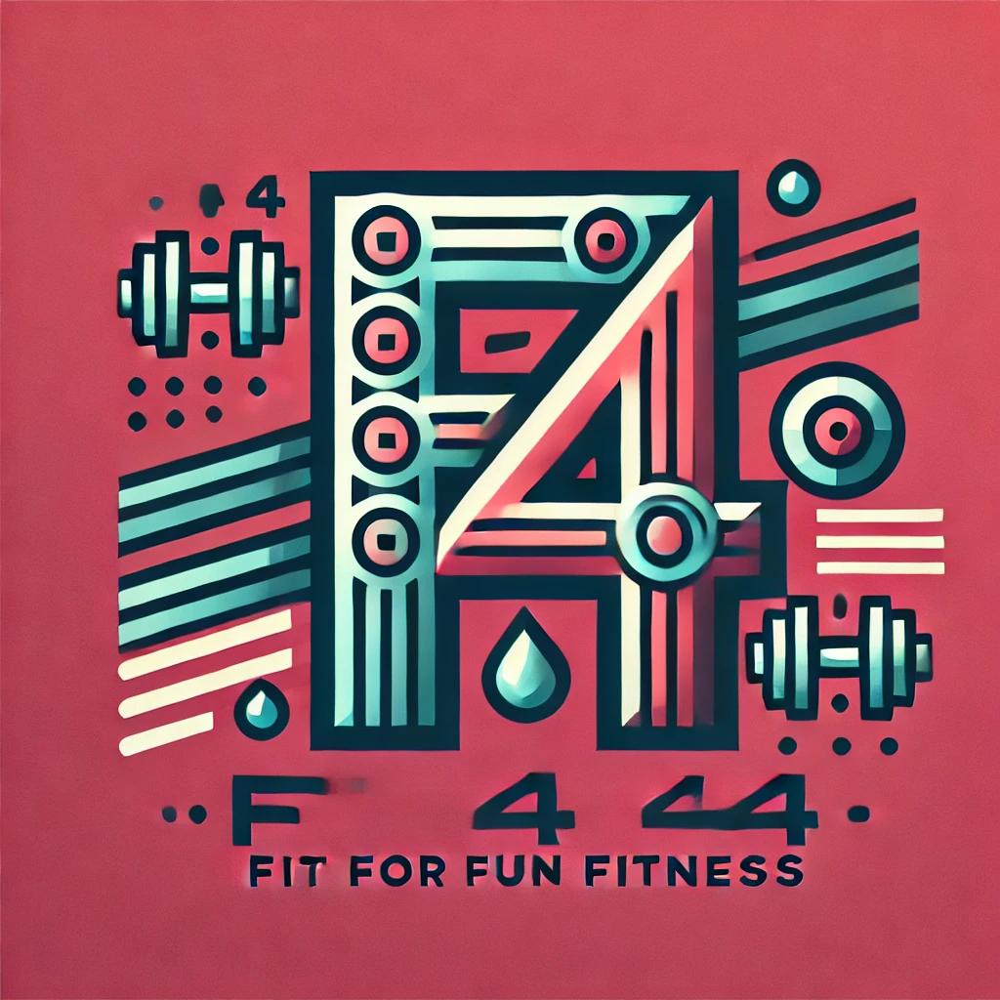

Get fit with expert training at our fitness center in Cobá, Yucatán! Whether you're a beginner or an athlete, we
offer personalized workouts, strength training, and cardio sessions to help you reach your goals. Join a
supportive community, train with top-notch equipment, and feel stronger every day. Visit us today and start your
fitness journey! Fit for Fun Fitness offers an exhilarating way to stay active with scenic lake views and
winding jungle trails. Whether you're jogging along the serene shoreline or pushing through a high-energy boot
camp in the heart of nature, every workout feels like an adventure. The fresh air, diverse terrain, and vibrant
atmosphere make fitness both fun and effective. From yoga by the water to trail runs that challenge endurance,
there's something for every fitness level. Embrace the energy, enjoy the journey, and get fit while having
fun—because workouts should be as exciting as the results. See you on the trails!💪🔥 #F4

Jaguar Stretch ✅
Unleash your inner feline with Jaguar Stretch, a dynamic flexibility and mobility class inspired by the
powerful grace of the jungle’s top predator. Flow through deep stretches, controlled movements, and
mindful
breathing to enhance flexibility, relieve tension, and boost overall body awareness. Perfect for
recovery
and injury prevention.
Javelina Dash ✅
Sprint, jump, and weave through agility drills in Javelina Dash, a high-intensity cardio workout
designed to
improve speed and endurance. Inspired by the wild javelina’s quick movements, this class combines
sprints,
interval training, and obstacle challenges to build stamina, strength, and explosiveness. Get ready to
push
your limits!
Sun Warrior ✅
Channel the power of the sun in this energizing bodyweight workout that blends strength, endurance, and
mobility. Sun Warrior combines powerful movements like lunges, squats, and core drills with dynamic
stretching and breathwork, leaving you feeling strong, centered, and revitalized—just like a true
warrior of
the elements.
Cosmic Cross-Training ✅
Blast through fitness plateaus with Cosmic Cross-Training, a fusion of strength, endurance, and
functional
movement exercises. This full-body workout cycles through circuits of weightlifting, plyometrics, and
bodyweight drills, ensuring a balanced challenge for all fitness levels. Expect high energy, cosmic
vibes,
and results that are truly out of this world!
Piranha Paddle ✅
Make a splash with Piranha Paddle, an exhilarating water-based fitness class that builds strength,
endurance, and core stability. Whether on a paddleboard or swimming alongside the current, you'll engage
in
resistance training and balance exercises that challenge every muscle. Dive in and feel the power of the
water!
Yucatán Yoga ✅
Find your flow with Yucatán Yoga, a mindful practice that blends traditional poses with the energy of
the
jungle. Breathe deeply, stretch fully, and connect with nature in this grounding yet rejuvenating
session.
Whether by the lake or under the canopy, it’s yoga with a tropical twist.